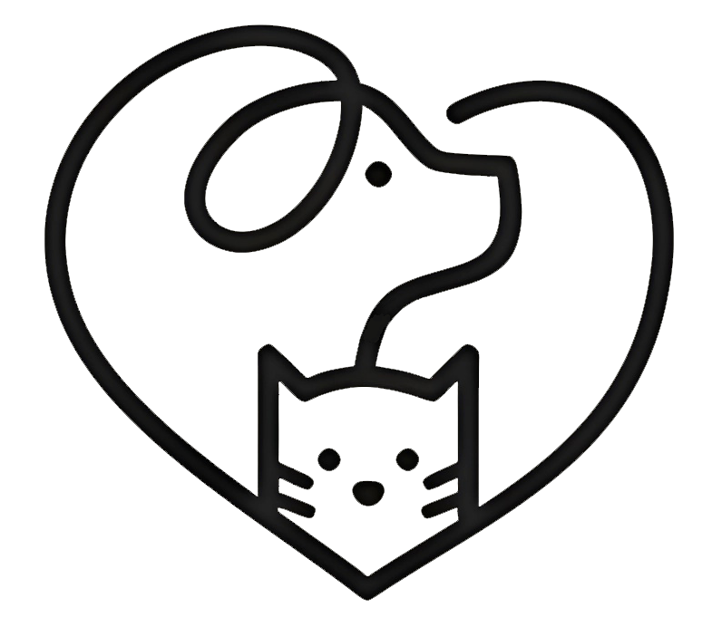

Noticias
Enterate de las noticias mas interesantes de nuestros amigos de otras especies. Novedades, curiosidades, cuidados y atenciones. Todo eso y mucho mas acá abajo

El viral de un bull terrier y un ciervo bebé que enternece a todos
Un pequeño ciervo se metió en un jardín en el que estaba un cachorro, pero en lugar de pelear se pusieron a jugar.

La caída de los bulldog inglés:
Sus cuidados especiales y los problemas de salud con los que nacen los llevan a ser animales que requieren un costoso nivel de vida que muchas personas que los compraron ya no pueden afrontar.

Golden se come el pasaporte de su dueño antes del viaje a boda
Donato Frattaroli y Magda Mazri pueden haber encontrado una manera de reemplazar un pasaporte que fue masticado por su perro, Chickie

Un perro le ladra a sus dueños para hacerles un insólito pedido
Los videos de mascotas suelen ser muy recurrentes en las redes sociales. En este caso, un cocker spaniel se hizo viral por empezar a ladrar y hacer un sorprendente pedido a sus dueños.
Puso a prueba a tres veterinarios para ver si atendían a su perro gratis
En un video compartido por @bigchungus_oficial, el tiktoker se presentó en 2 veterinarias y ninguno quiso asistir al animal gratis. Sin embargo, cuando arribó al tercero, recibió una respuesta que lo impactó.
Día Internacional del Animal sin Hogar: 5 millones viven en la calle.
El abandono por parte de sus dueños y la falta de conciencia acerca de la importancia de la castración hace que muchos animales nazcan y mueran en las calles sin ningún tipo de atención ni cuidados.